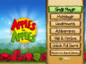
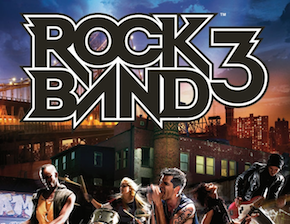
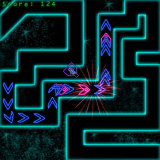
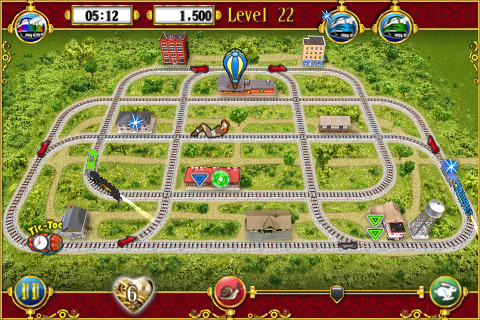
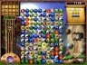
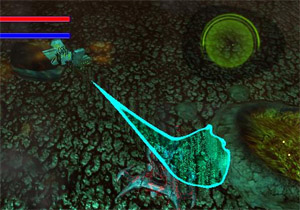

Impakt Games
| Unannounced (iPhone, iPad, Android) | April 2012 through Present |
Happily engineering games and reviewing technologies for a great and upcoming startup; Impakt Games. Keep your eyes and ears open.
;")
| Unannounced (iPhone, iPad, Android) | April 2012 through Present |
Happily engineering games and reviewing technologies for a great and upcoming startup; Impakt Games. Keep your eyes and ears open.
| Unannounced (iPhone, iPad, Android, Windows Phone 7) | October 2011 through January 2012 |
Prototyped unannounced game on the iPad and iPhone using the Lua based Corona framework for rapid development.
Prototyped an unannounced "serious-app" on iPad and added features to an augmented reality game.
Setup to develop for the Android platform.
Built and deployed Windows Phone 7 projects
| Apples to Apples (XBLA) Shipped; February 2012 | September 2011 |
 Helped add minor features to a nearly complete game, added miscellaneous sound effects in both single and multiplayer modes.
| Monster High: Ghoul Spirit (Wii) Shipped; October 2011 | December 2010 through August 2011 |
Wii game where I spent most of my time working with a proprietary scripting language to create the minigames/activities for the 'open-world' game of Monster High. Created the gestures for swinging the wii-mote around for the various actions. Was on the project from alpha to just before gold.
| Rock Band 3 (Xbox 360, PS3) Shipped; October 2010 | May 2010 through June 2010 |
 I was called in for some triage support to help push the title out the door. Tasked with reproducing issues from QA in a debug environment to track down the cause for the XBox 360 and PS3 builds. Helped track memory issues with in-game reports.
| Darkest of Days (PC) Shipped; September 2009 | October 2007 through December 2008 |
The confederates are coming, wait now come the allies! Time travel can be a great fun, and the ideas behind Darkest of Days were amazing. Granted some of them weren't pulled off how the team wanted, but the game moved on anyways despite minor changes. I came onto the project mid-way through development, the engine was already working well and habitat, the level editor, was a tad unstable. I was thrown into the unknown on the largest code base I had seen as a programmer, but I pushed that aside and did my tasks.
Habitat's instability kept me busy for my first few months, fixing little quirks and adding new features as the designers would request them. My tasks changed gears to get the game prepared for release. By adding a threaded file-archive to reduce the space requirements and improve loading speeds dramatically. During the final part of development the HUD needed a visual and behavioral overhaul to add fading elements and show only what is required or changing.
| Warp Defense (iPhone) Shipped; July 2009 | January 2009 through March 2009 |
 Probably one of my favorite games to work on as I enjoy the strategy side of things. It also presented me with new design issues, and I was in control of a majority of the code design from the ground up. The only flaw I would say was learning Objective C and the iPhone framework while designing the code. I was attempting to finish the project before I left for a life-adventure, however knowing that might not be possible I focused on as many features as I could while keeping everything data driven. Even the user interface is done by scripts that a non-programmer could handle. Levels, upgrades, unlocks, enemies and towers were also scripted. I am glad to see this projected completed, it was a blast to work on.
| Wild Wild Trains (iPhone) Shipped; July 2009 | July / August 2007 and November / December 2008 |
 Worked off-site for a month or so on a prototype for a train puzzle game. This prototype was designed as such, quick code and eventually a small editor was added. A year later I do some more off-site work, since the game was now in development for the iPhone. The prototype jumped to become the game engine powering the project. Added more features and editing tools while another member of Stratogon handled porting the code from PC to iPhone.
| Lost Treasures of Alexandria (PC) Shipped; April 2008 | October 2007 |
 Sound is important in games that is often overlooked until the end. For the Lost Treasures of Alexandria, I implemented basic sound support for the project. Because of the aimed market, download-able games, a small memory footprint for download size was a priority. For that reason ogg files were chosen for their quality and size. Using Ogg Vorbis I implemented basic sound effects and streaming music that fit the needs of the project.
| A.R.C. Angels (XBLA) | August through November 2007 |
 After doing some work from home, I had a chance to ride to Florida for a weekend with a friend. This was great because I could shake hands and meet the person who got me started. As he shook my hand he looks at me and asked if I wanted a job, on-site for a couple of months. I was astonished, the project was A.R.C. Angels, where a team of four or five programmers spent a few months in crunch mode.
None of us knew the language, C#. None of us knew the framework XNA. But we all did our parts and created a project. My tasks ranged from implementing player physics, to gameplay bits. From input with force feed-back to a world that maintains enemies and that object structure.
| Bachelor's of Science: Game Design and Development | October 2004 through October 2006 |
 After two years of hard work I graduated from Full Sail University, with a Bachelor's of Science in Game Development. During my free time, not spent on school work, I was found programming side projects to apply the techniques first hand, often getting classmates to collaborate for different experiences.
After two years of hard work I graduated from Full Sail University, with a Bachelor's of Science in Game Development. During my free time, not spent on school work, I was found programming side projects to apply the techniques first hand, often getting classmates to collaborate for different experiences.
Copyright © 2012, Tim Beaudet
{kind=link}
{kind=link}
{kind=link}
{kind=link}
{kind=link}
{kind=link}
{kind=link}
{kind=link}
{kind=link}
{kind=link}
{kind=link}